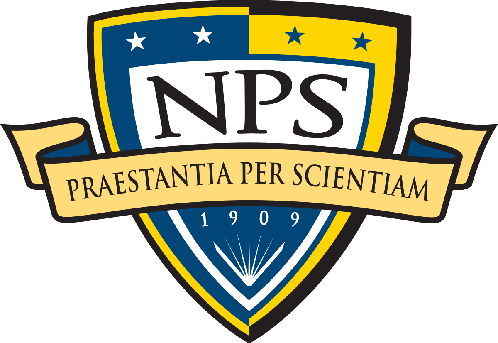

<mat-toolbar color="primary">
    <mat-toolbar-row>
        <div id="container" [routerLink]="'/home'">
            
            &nbsp; &nbsp;
            <h1>GBBAT</h1>
        </div>
        <span id="spacer"></span>
        <div id="container2" (click)="help()">
            
        </div>
        <div id="helpcontent" (click)="help()">
            <p id="helptext">
                You are now on the Homepage. Here you can learn about what GBBAT is and what GDELT data it has to offer. 
                If you would like to look into events & related news articles featuring Chinese media, click the big button.
            </p>
            
        </div>
    </mat-toolbar-row>
</mat-toolbar>